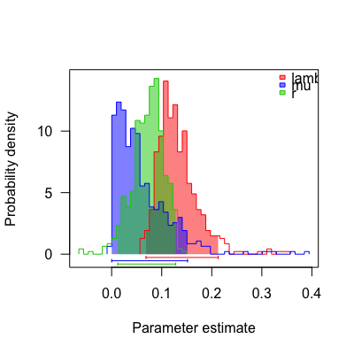
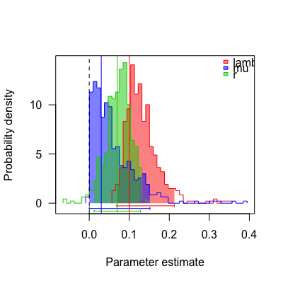

make.bd(tree, sampling.f=NULL, unresolved=NULL, times=NULL, control=list()) make.yule(tree, sampling.f=NULL, unresolved=NULL, times=NULL, control=list()) starting.point.bd(tree, yule=FALSE)
ape “phylo” format.branching.times. You don't need to use this unless you know
that you need to use this. Don't use it at the same time as
tree.sp1=10, sp2=2, would mean that sp1 represents 10
species, while sp2 represents two. These labels must exist
in tree$tip.label and all other tips are assumed to
represent one species.method
can be either nee or ode to compute the likelihood
using the equation from Nee et al. (1994) or in a BiSSE-style ODE
approach respectively. nee should be faster, and ode
is provided for completeness (and forms the basis of other methods).
When ode is selected, other elements of control affect
the behaviour of the ODE solver: see details in
make.bisse.Prepare to run a constant rate birth-death model on a
phylogenetic tree. This fits the Nee et al. 1994 equation,
duplicating the birthdeath function in ape. Differences with
that function include (1) the function is not constrained to positive
diversification rates (mu can exceed lambda), (2) [eventual] support
for both random taxon sampling and unresolved terminal clades (but see
bd.ext), and (3) run both MCMC and MLE fits to birth death
trees.
make.bd returns a function of class bd.
This function has argument list (and default values)
f(pars, prior=NULL, condition.surv=TRUE)
The arguments are interpreted as
pars A vector of two parameters, in the order
lambda, mu.
prior: a valid prior. See make.prior for
more information.
condition.surv (logical): should the likelihood
calculation condition on survival of two lineages and the speciation
event subtending them? This is done by default, following Nee et
al. 1994.
The function "ode" method is included for completeness, but should not be taken too seriously. It uses an alternative ODE-based approach, more similar to most diversitree models, to compute the likelihood. It exists so that other models that extend the birth-death models may be tested.
Nee S., May R.M., and Harvey P.H. 1994. The reconstructed evolutionary process. Philos. Trans. R. Soc. Lond. B Biol. Sci. 344:305-311.
## Simulate a tree under a constant rates birth-death model and look at ## the maximum likelihood speciation/extinction parameters: set.seed(1) phy <- trees(c(.1, .03), "bd", max.taxa=25)[[1]] lik <- make.bd(phy) ## By default, optimisation gives a lambda close to 0.1 and extremely ## small mu: fit <- find.mle(lik, c(.1, .03)) coef(fit)lambda mu 1.021010e-01 6.107215e-07## The above optimisation uses the algorithm \link{nlm} for ## compatibility with ape's \link{birthdeath}. This can be slightly ## improved by using \link{optim} for the optimisation, which allows ## bounds to be specified: fit.o <- find.mle(lik, c(.1, .03), method="optim", lower=0) coef(fit.o)lambda mu 0.09613913 0.00000000logLik(fit.o) - logLik(fit) # slight improvement'log Lik.' 0.04247715 (df=2)## Special case methods are worked out for the Yule model, for which ## analytic solutions are available. Compare a direct fit of the Yule ## model with one where mu is constrained to be zero: lik.yule <- make.yule(phy) lik.mu0 <- constrain(lik, mu ~ 0) ## The same to a reasonable tolerance: fit.yule <- find.mle(lik.yule, .1) fit.mu0 <- find.mle(lik.mu0, .1) all.equal(fit.yule[1:2], fit.mu0[1:2], tolerance=1e-6)[1] TRUE## There is no significant improvement in the fit by including the mu ## parameter (unsurprising as the ML value was zero) anova(fit.o, yule=fit.yule)Df lnLik AIC ChiSq Pr(>|Chi|) full 2 -22.08 48.161 yule 1 -22.08 46.161 3.0127e-12 1## Optimisation can be done without conditioning on survival: fit.nosurv <- find.mle(lik, c(.1, .03), method="optim", lower=0, condition.surv=FALSE) coef(fit.nosurv) # higher lambda than beforelambda mu 0.1003191 0.0000000## Look at the marginal likelihoods, computed through MCMC (see ## \link{mcmc} for details, and increase nsteps for smoother ## plots [takes longer]). samples <- mcmc(lik, fit$par, nsteps=500, lower=c(-Inf, -Inf), upper=c(Inf, Inf), w=c(.1, .1), fail.value=-Inf, print.every=100)100: {0.2099, 0.1296} -> -25.08160 200: {0.1453, 0.0975} -> -23.46928 300: {0.1183, 0.0465} -> -22.59005 400: {0.1451, 0.0135} -> -23.85709 500: {0.1416, 0.0799} -> -23.13356samples$r <- with(samples, lambda - mu) ## Plot the profiles (see \link{profiles.plot}). ## The vertical lines are the simulated parameters, which match fairly ## well with the estimated ones. col <- c("red", "blue", "green3") profiles.plot(samples[c("lambda", "mu", "r")], col.line=col, las=1, legend="topright")
abline(v=0, lty=2)abline(v=c(.1, .03, .07), col=col)
## Sample the phylogeny to include 20 of the species, and run the ## likelihood search assuming random sampling: set.seed(1) phy2 <- drop.tip(phy, sample(25, 5)) lik2 <- make.bd(phy2, sampling.f=20/25) fit2 <- find.mle(lik2, c(.1, .03)) ## The ODE based version gives comparable results. However, it is ## about 55x slower. lik.ode <- make.bd(phy, control=list(method="ode")) all.equal(lik.ode(coef(fit)), lik(coef(fit)), tolerance=2e-7)[1] TRUE
constrain for making submodels, find.mle
for ML parameter estimation, mcmc for MCMC integration,
and make.bisse for state-dependent birth-death models.